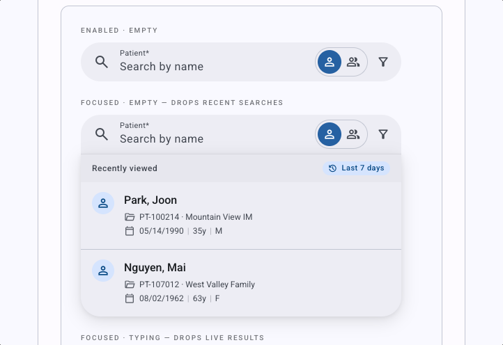
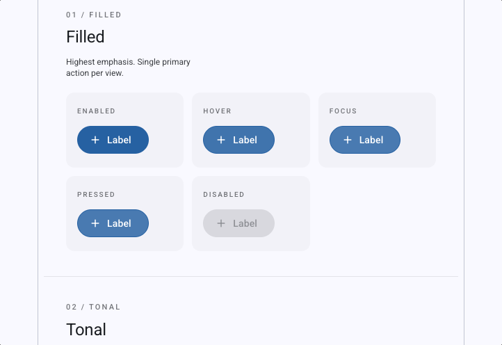
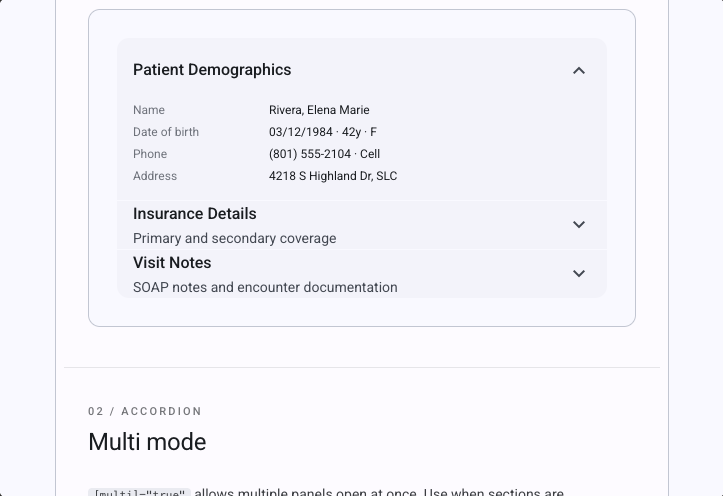
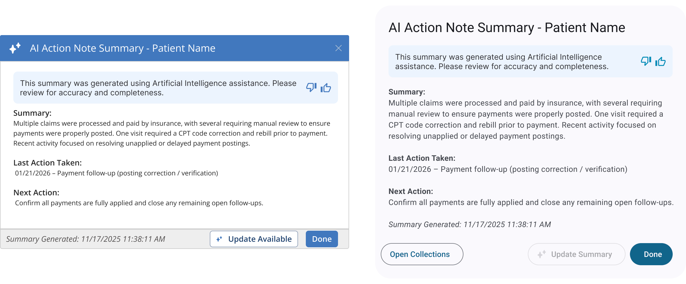
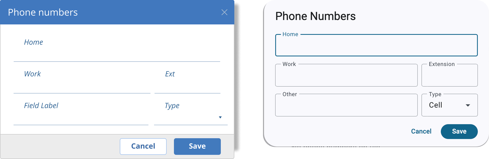

- My role
- Led the governance layer: usage rules, Figma module upgrades, accessibility specifications for engineering, and the standards documentation.
- Worked with
- Our lead developer, an offshore engineering team, and 12+ development teams adopting the upgrade, including six I partnered with directly.
- Constraints
- Customization had blocked upgrades past Angular 18. Every component had to upgrade one-for-one without breaking the UI.
- Shipped
- Standard Material 3 components, upgraded Figma modules, a living standards site, and a Claude Design library. Rolling out as teams move to Angular 20 and beyond.
01 — The Problem
Customizations blocked the Angular upgrade
The platform had been using a heavily customized version of Angular Material. We’d been telling leadership for years that the customization would eventually block us from upgrading — and that we needed resources to maintain the library.
It did. We identified breaking changes that kept the product from upgrading past Angular 18 without breaking core UI behavior.
This had become a technical limit. It affected what the product could ship and how fast teams could move.
We gave leadership three options:
Reskin the whole library
Invest heavily in upgrading and re-customizing every component.
Buy a new library
Purchase and implement a different Angular component library.
Transition to unaltered M3
Create an elegant transition plan back to standard Material 3. This is the option leadership chose.
02 — The Transition
Upgrading the library and documenting its use
We worked with an offshore team for two months to upgrade the library from customized Material 2 to standard Material 3, one component at a time. Each component had to be stripped of its customizations so that when a product team turned on the upgrade, it would run cleanly — one-for-one — and update the UI without breaking anything.
Standard components still leave room for interpretation, so I defined the rules for how each one is used: for example, when a text field needs multiple icons, the exact order and placement, so users aren’t surprised and can rely on how it behaves. Those rules kept dev teams — and designers — from drifting apart as the upgrades rolled out.
I mapped out the first upgrades, designed the new experience, and reviewed and tested each component as the team completed it.
My role: I led the governance layer — usage decisions, component guidance, Figma module upgrades, and accessibility specifications for engineering. I also built a Claude Design library so the UX team could prototype with the same components.



From the Claude Design library: production-matched components with sample data, so designers prototype with what engineering actually ships.
03 — Before → After
Before and after the move to Material 3
| Before | After | |
|---|---|---|
| Component library | Heavily overridden, brand-flavored Material — diverged significantly from standard M3. | Standard Material 3, with custom components only where genuinely needed and deliberately justified. |
| Angular compatibility | Blocked at Angular 18 due to accumulated customization debt. | Migration path to current Angular versions unblocked. |
| Dark mode | Custom dark stylesheet required per component. | Inherited from M3 — one switch, consistent behavior. |
| Accessibility | Custom implementation required per component. | Standard M3 supplies accessible semantics and keyboard support; we documented, built, and tested what each component still needed. |
| Figma ↔ Eng handoff | Design files reflected our custom components, not standard M3. The gap between design and production was large. | Figma modules upgraded to M3. Developers working in the same component language as designers. |
| New feature decisions | “What should this look like?” answered ad hoc. | Governance layer: color decisions, density choices, outlined vs. filled rationale, and documented accessibility requirements engineering builds in by default. |



04 — Key Decisions
Customize only when the product needs it
Custom components only when needed
We still customize, but each customization is deliberate and documented, so the next decision can build on the last.
Settled outlined vs. filled with rationale, not preference
The team had strong opinions on both sides. I resolved it by documenting the M3-intended use cases for each and applying that framework consistently.
Upgraded Figma modules to M3
Designers working in our custom Figma components while engineers worked toward standard M3 was creating rework on both sides. Upgrading the modules closed the gap.
Accessibility callouts that became a default
Rather than assuming M3 inheritance covered everything, I identified the places where developers would need to add code to make components WCAG 2 compliant. Our lead developer used that documentation to build a skill that helps developers do this by default — and adds Pendo tagging by default too.
Showing M3 on real product screens
Instead of writing a spec document, I showed what M3 modules looked like applied to real product screens.
05 — The Standards Library
A shared standards library for design and engineering
Governance only works if people can find it and trust it. Our lead developer and I recorded in-depth working sessions on every topic — feedback patterns, form fields, accessibility, writing, icons. I researched each one, blended our decisions with outside standards like Material 3 and WCAG, and wrote the final documentation.
The result is a living documentation site shared by design and engineering: numbered UX standards written as decision records, component pages with “use for / don’t use for” rules, accessibility requirements with the code to meet them, writing standards, and a product icon library. The examples below are rebuilt and simplified from it, with names and brand details removed.
When to use a modal dialog
- Critical system and save errors
- Decisions that need explicit confirmation before the system can proceed
- Notices that must be acknowledged
- Non-blocking feedback — use a snackbar
- Field-level validation — use field decorators
- Page or form-level errors — use an inline message
Every component page opens with the same “use for / don’t use for” rules, so teams stop re-deciding the basics.
Match the component to the interruption the message deserves
| Message type | Component | Behavior |
|---|---|---|
| Field-level validation error | Field decorator + tooltip | No layout shift |
| Success confirmation | Snackbar | Auto-dismisses |
| Page or form error | Inline message | Shifts UI; sits above the form |
| Critical error requiring action | Modal dialog | Blocks the task until acknowledged |
| Stacked patient messages | Side sheet + message cards | Keeps the record in view |
Standards are written as decision records, so the next team knows what was decided and why.
Buttons — what M3 gives you, and what your team must add
- Renders a native button — keyboard accessible
- Disabled state sets aria-disabled
- Activates on Enter and Space
- aria-label on every icon-only button — describe the action, not the icon
- aria-hidden on icons inside labeled buttons
- A visible :focus-visible outline (global)
The “must add” column is where most audit failures come from. Our lead developer turned this documentation into a coding skill so it happens by default.
Checking our own color tokens against WCAG AA
| Token | Hex | Ratio on white | Decision |
|---|---|---|---|
| Body text | #1c1c2e | 16.7 : 1 | All text sizes |
| Secondary text | #44474f | 9.3 : 1 | All text sizes |
| Muted text / input border | #74777f | 4.48 : 1 — just fails | Large text and 3:1 borders only — not body text |
| Placeholder | #aaaaaa | 2.3 : 1 — fails | Replaced with a darker, passing token |
| Divider | #d0d3db | 1.5 : 1 — fails | Decorative only — never for input state |
| Warning amber | #f29900 | 2.3 : 1 — fails | Icon accent only, never the sole text color |
Auditing our own palette turned up tokens that failed AA — and turned each one into a rule. Values simplified for illustration.
Focus management in a single-page app (WCAG 2.4.3 Focus Order · 4.1.3 Status Messages)
| Trigger | Move focus to | Announce |
|---|---|---|
| Route change (new page) | The page’s <h1> | New page title (polite) |
| Dialog opens | First focusable element | — dialog role announces itself |
| Dialog closes | The element that opened it | — |
| Form submit fails | First field with an error | Error count (assertive) |
| Search results load | Stay in the search field | Result count (polite) |
In a single-page app, screen readers don’t hear page changes on their own. These rules make every route change predictable.
A product icon set built for healthcare workflows — including eligibility states — in filled, outlined, and duotone styles. Representative icons shown.
Also documented: form-field layout and density rules (no space reserved for errors that rarely appear), UX writing standards for voice, tense, and error messages, and a WCAG AA reference.
06 — Outcomes
What the move delivered
Angular upgrade path unblocked
The product is no longer held at Angular 18 by customization debt.
Dark mode by default, accessibility by design
Dark mode is inherited from M3; accessibility comes from the M3 foundation plus documented, tested additions.
Shared component resources
Figma and Claude component resources established for design and engineering.
Living governance reference
Documentation available as a living reference for ongoing component decisions.
Adoption
Rollout has dedicated UX and engineering support, and because every team has to move to Angular 20 and beyond, the standards are being adopted as part of that upgrade. Teams across the product have told us the library documentation is what they’d needed for years.
What I’m improving next
Our AI-assisted upgrade works, but teams found it token-heavy. I’m reviewing the upgrade process to find where the skill can be leaner.